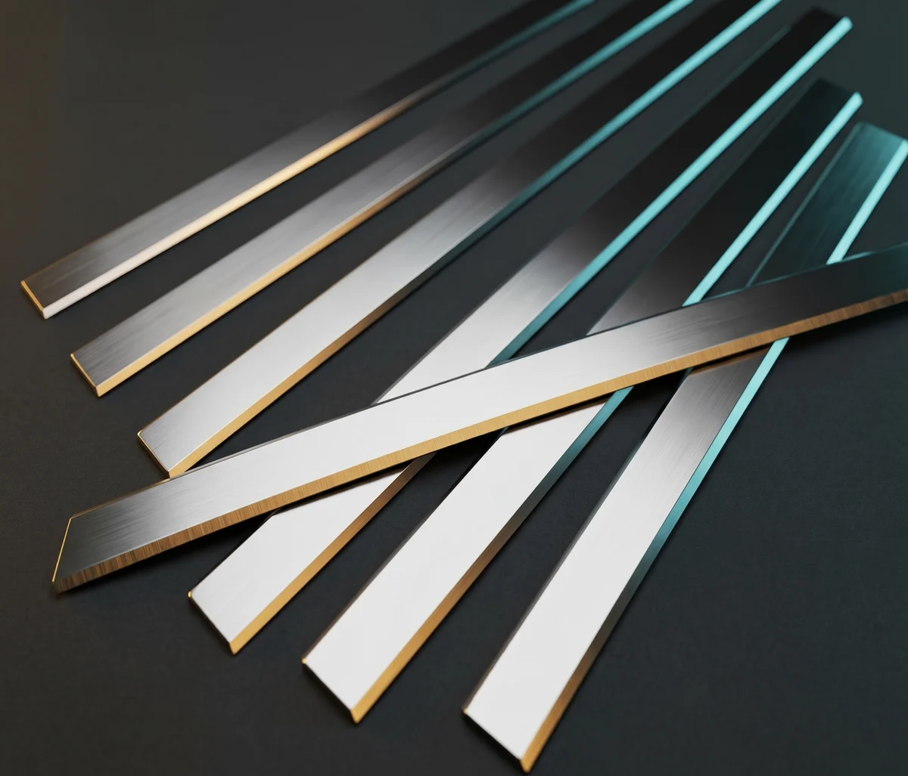

Opcions de Brillantor de Contorn (Glow Effect)

Opció 1: Halo Blau Elèctric
Contorn de 2px amb halo exterior i interior intens
Opció 2: Llum Làser Tècnica (Cian + Blau)
Nucli cian brillant amb reflexos industrials
Opció 3: Aura de Neó Perimetral
Marc flotant amb brillantor difusa equilibrada